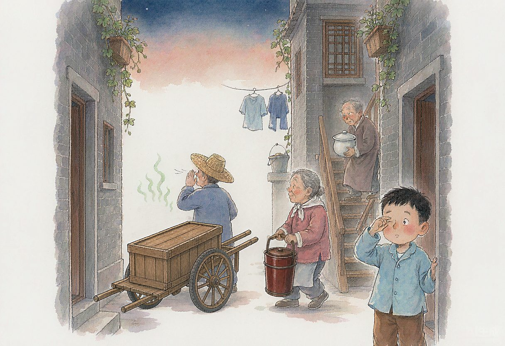

近来，媒体上有不少有关“小厕所大民生”的报道和讨论。习近平总书记一直深深牵挂着这小小的厕所，对“厕所革命” 两次作出重要指示。
这勾起了我——一个历经沧桑的老知青对于厕所的回忆。
记得小学阶段，正值自然灾害，天灾人祸、缺吃少穿，住房条件更是差得可怜。到同学家串门，见到的大多是阁楼、天井、灶披间，不少住石库门房的，有的面积稍微大一点，但是带抽水马桶的厕所（当时称 “小卫生”）绝对是稀罕之物。
有一个同学，资本家出身，家里居然有 “大卫生”（即浴缸），当时在同学们的心目中，那简直就是皇宫了！
我家居住在白渡桥下的“百禄坊”—— 一条典型的石库门弄堂。
每天清晨，天空还是一片漆黑，弄堂里静悄悄的。往往是推粪车师傅猛然的一声吆喝“马桶拎出来”，把我从香甜的睡梦中叫醒。稍后，便依稀听得张家阿婆、李家大爷小心翼翼地拎着马桶从又陡又窄的木楼梯走下、开门出来，接下来，整条弄堂，此起彼伏，便是马桶豁筅搅动毛蚶壳产生的 “交响乐”了。这是儿时记忆中难忘的一幕。
我曾经很庆幸：家里安装有一个简易的抽水马桶，是整条弄堂里少数有抽水马桶的人家之一。
可是由于地下管网等设备不配套、安装不规范，管道经常堵塞，常常看到清洁工弯下身子，撬开窨井盖，拿着长长的竹片，不断地捅啊捅。往往是：通一下，能用几天，但好景不常，接着又是老调重弹。
由于实在不习惯用马桶方便，内急时，就只能到外面找厕所，在那个贫困的年代，公厕也是凤毛麟角。我常常舍近求远，要走十来分钟，赶到三角地菜场，为的是那里的公共厕所规模较大、坑位较多。
印象中，三角地菜场的公共厕所虽然也设施简陋，让人感受不佳。但是场面“颇为壮观”，好几条用水泥砌成的长长的粪槽绵绵延伸，中间用一块一块的水泥预制板分割开来，总共的坑位足足有二、三十个。
每当尾端的大水箱放水冲刷时，水声隆隆、一泻千里，颇有 “黄河之水天上来” 之势，只是每当此时，如厕者可得小心了：千万别让这个 “黄河之水” 沾上了。
但是，三角地菜场的厕所也经常是人满为患，如厕难已经成了我在孩童时代的最头疼的问题之一。
进了中学，如厕问题大大缓解。
这是一所有着悠久历史的老学校，历经沧桑的老校舍带着它的厕所，一代一代地传承了下来。这里的厕所虽然老旧，但比较整洁、干净。更让我暗喜的是：它们分隔成一个个小间，有门，可以锁。再也不像三角地菜场的公厕那样毫无私密可言。
于是，我调整好自己的生物钟，一般都在学校解决如厕问题。
令人始料不及的是，到了中学尾声，我与母校的厕所居然结下了不解之缘！
那是难忘的1966，文革的风暴席卷全国。我作为66届高中毕业生继续求学的梦想一下子破灭了，以读书为最大乐趣的莘莘学子，变得无所事事。
更为要命的是：我有两个被打成右派的耿直的哥哥。常被要求谈谈自己的“思想认识”，文革中的日子就更为难过。
腥风血雨降临到我的母校，那段时间，我常有手足无措、惶惶不可终日之感。
某日，在学校的操场居然看到这样一幕：
一群衣衫凌乱的 “牛鬼蛇神”，被几个“造反派”凶神恶煞的用体操棒驱赶着在地上爬。其中有男老师，也有女老师。
我定睛一看，啊！自己一向十分敬重的初中的班主任也在其中。他的头被剃成了“阴阳头”—— 一半被剃光了，另一半留着的，也像被狗啃过似的。
我想起了平时注重仪表的他，在课堂上尽心尽力地为我们讲解的情境。心中一阵抽搐，再也看不下去了。我要尽快离开这个罪恶之地。
可是跑到哪去呢？教室已经被这个“造反队”、那个“战斗组”占领了，平时常去的图书馆也早已关门大吉。
冥冥中仿佛有人在指点，我不知不觉地走进了厕所，顺手关上了那个“小间”的门，好一阵子，才稍稍缓过一口气来……
又一日，全校召开批判大会。大礼堂里挤得满满当当，声势之大、气氛之烈前所未有。
可是被押上台的主角，竟然是一位刚来校工作才两年的秦姓教师，年龄比我们老三届大不了几岁啊。
我还在满腹疑惑、百思不解中，“造反派”已经展开了声色俱厉的批判。他们把在无法无天的抄家行动中“缴获”的秦老师的日记作为 “罪证”，断章取义、无限上纲、信口雌黄，把种种莫须有的罪名强加到秦老师的头上。
反右运动中盛行的文字狱，此刻已经到了登峰造极的地步。
我想起了我的哥哥遭受的冤屈，内心一阵阵的刺痛。
我离开了礼堂，悄悄的、很自然的又走进了那个“小间”。
类似的场景在文革中屡屡再现，“小间”俨然成了我的“避难所”……
呜呼！偌大一个校园，搞得乌烟瘴气。一切都黑白颠倒了。
真是讽刺！全校只剩下这个平时与“脏”、“臭”联系在一起的地方，却还稍稍干净，让我暂时避开了那种种恶言恶行，给我以片刻的宁静……
星移斗转，终于迎来了改革开放的年代！
厕所也迎来了一场革命。
报上一则消息吸引了我的注意：宿迁建成不少自带wi-fi的公厕，已成为便民服务综合体，附近不少居民常去看书、读报、看电视，快递小哥、过路司机、环卫工人也时常去打水、休息。
宿迁一位大爷喜滋滋地说：“不叫公厕，改名叫‘街坊公舍’啦，空间好大，还有电视、图书、免费开水。我孙女和外甥女放学后喜欢来这里写作业、看看漫画书。我也顺便在这里免费量血压。”
厕所，文革中我的“避难所”，现在成了便利百姓生活的“街坊公舍”
这一变化，不正折射出我们国家的巨变啊！
（本文刊登于2020.4.17《联合时报》）